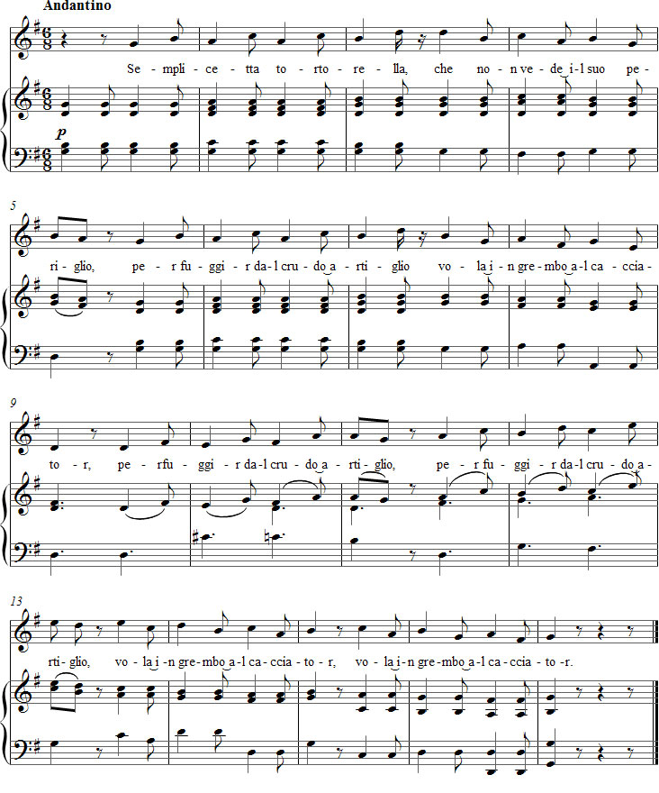

Vaccaj: Exercise 1b
Listen to the recording
Sheet music

Lyrics
Intervalli di terza
Third intervals
does not notice the peril
when flying from the raptor -
and flies to the hunter's snare.
Performance instructions
This exercise introduces intervals of a third (there are 29 leaps of a third in the song). The 6/8 time signature suits the restless character of the text chosen by Vaccaj. The song is also a legato exercise, which is more demanding than the previous exercise because of its faster tempo and leaping rhythm.
Metastasio's poem has eight syllables per line. Each line has stresses on the third and seventh syllables. In his setting, however, Vaccaj emphasises the trochaic metre, creating four stresses. The conflict between the natural word stresses and the poetic metre creates a productive tension. The phrases begin in the middle of the bar and must be treated accordingly. They are often sung as though they began on the first beat. (Compare the established performance practice of Caro mio ben.)
The last two lines of the poem are sung three times. This provides an excellent opportunity to observe – or recall – how important it is to vary repeated phrases. The accompaniment supports the singing, but does not follow the melody as consistently as in Exercise 1a.
Notice that Vaccaj has composed a long appoggiatura on the word periglio in bar 5 and on the word artiglio in bars 11 and 13. By contrast, he leaves the word cacciator without an ornament, because according to the rules, a word whose final syllable is stressed cannot take a long appoggiatura.
Practice suggestions
In this exercise, too, you can practise using syllables that suit the individual singer. Choose them so that the vowel on the eighth note is more closed than the vowel on the quarter note, in order to avoid unwanted accents on the weaker part of the rhythm (for example, va-ve, vä-ve, va-vo or va-vu).
If you wish, continue practising with solfège syllables. Also try filling in the intervals of a third with stepwise motion in seconds. The entire song can be practised this way, except for phrases 5 and 6, where the melody is shared with the accompaniment. It is therefore better to practise the thirds directly in those phrases. For example:
fa - sol - la - sol - la - si - sol - la - si - la - si - do2
do2 - si - la - si - la - sol - la - sol - fa - la - sol
fa - sol - la - sol - la - si - sol - la - si - la - si - do2
la - sol - fa - sol - fa - mi - fa - mi - re - do
(va - ve - va - ve etc.)
(va - vo - va - vo etc.)
re2 - do2 - si - do2 - si - la - si - la - sol - la
si - la - sol - la - sol - fa - sol - fa - mi - fa
Next, introduce the original text, but retain the added passing notes. This creates several melismas, which must be sung in just as steady a tempo and with just as good breath support as in the first exercise. Try to maintain the same feeling of legato in bars 9–13 as well. Practise this way for long enough before removing the intermediate notes.
Ideas for interpretation
Legato becomes easier when you understand that the underlying mood of the poem is melancholy – not cheerful. However, the fate of the bird should not be portrayed with excessive emotion. It is important that the tempo suits the meaning of the text and does not "fly" or "flutter". Andantino here means a slow andantino. The pianist, too, should articulate with a gently melancholic quality.
Rhythmic accentuation may feel reassuring to an inexperienced student, but over time greater attention should be paid to the natural stresses of the text. The simplest way to resolve the problem of accentuation is to emphasise the final first beat of each phrase. This makes the song feel as though it were in 12/8 time.
Other notes
Vaccaj's change from da to dal may also be justified from the point of view of vocal technique. It provides an opportunity to consider the vowel following the consonant before producing it.
Forshufvud, G. 1994. Con lieve fiato. Lärarhandledning till Nicola Vaccajs Metodo pratico. Göteborgs universitetet.